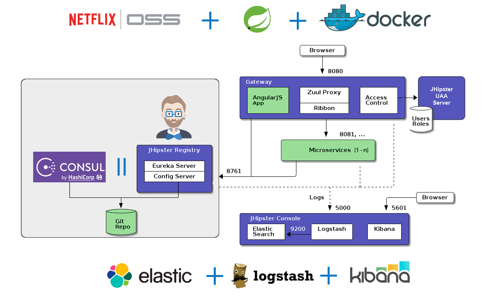

Introduction to JHipster 4

Pierre Besson
April 21th, 2017 in Rennes
Greetings, Java Hipster!
Who am I ?

- Java developer @IpponTech
- JHipster core team member
- Favorite technologies:
- ☕ JAVA EE
- üçÉ Spring
- üê≥ Docker
- ☸️ Kubernetes

- 300 collaborators worldwide (France, USA, Australia)
- 4 cities in France : Paris, Nantes, Lyon, Bordeaux
- Specialized in Java, Cloud, Big Data


The JHipster team
https://jhipster.github.io/team/
What is JHipster?
JHipster is a
Yeoman generator,
used to create a
Spring Boot + Angular
full stack application.
100% open source
How to use JHipster?
1) Install JHipster
yarn global add generator-jhipster
2) Create a new directory and go into it
mkdir myApp && cd myApp
3) Run JHipster and follow instructions on screen
yo jhipster
JHipster goals
- Provide scaffolding for a full stack application
- Based on modern technologies
- Maximize development productivity with tooling
- Production ready (maintainable, secure, scalable)
- DevOps ready: provide configuration for docker, CI...
Client side options

Server side options

Deployment options

Monolith vs Microservices
- Monolith: Back-end + Front-end
- Microservice architecture:
- Registry
- API Gateway (proxy + front-end)
- Microservices (back-end only)
JHipster Microservice Architecture
About JHipster
JHipster downloads

Project Statistics


- 500 000 website visits / month
- 10 000 git clones / month
- 320 contributors in total
- Our statistics are anonymous and opt-in only
Companies using JHipster
jhipster.github.io/companies-using-jhipsterJHipster Marketplace
What's new in JHipster 4
What's new for the back-end
- AAA Sonar Quality (analysis by Sonarsource)
- JHipster library ( jhipster/jhipster)
- Improvements to caching configuration
- CI-CD sub-generator
- Constructor Injection
Spring dependency injection style
Field injection (JHipster 3)
@RestController
@RequestMapping("/api")
public class UserResource {
@Inject
private UserRepository userRepository;
@Inject
private final UserService userService;
}
@RestController
@RequestMapping("/api")
public class UserResource {
private final UserRepository userRepository;
private final UserService userService;
public UserResource(UserRepository userRepository, UserService userService) {
this.mailService = mailService;
this.userService = userService;
}
@RestController
@RequestMapping("/api")
public class UserResource {
private final UserRepository userRepository;
private final UserService userService;
@Inject
public UserResource(UserRepository userRepository, UserService userService) {
this.mailService = mailService;
this.userService = userService;
}
}
Cache improvements
- Hibernate 2nd level cache (now using Hibernate 5)
- Spring caching abstraction configured by default
- Improved Ehcache configuration
- Improved Hazelcast configuration
What's new for the front-end


- Feature parity with AngularJS
- Performance improvements
- Component based
- Bower, Gulp -> Yarn, Webpack
Demo time
Simple monolith demo
Entity generation
Generating an entity produces:
- A database table
- A Liquibase change set
- A JPA Entity
- A Spring Data JPA Repository
- A Spring MVC REST Controller, which has the basic CRUD operations
- An Angular router, a component and a service
- An HTML view
- Integration tests, to validate everything works as expected
- Performance tests, to see if everything works smoothly
Define an entity
- By answering questions:
yo jhipster:entity Foo - By importing an UML file:
jhipster-uml file.xmi - By importing a JDL file:
yo jhipster:import-jdl file.jdl
Then edit your JDL files with:- Any editor (it's just plain text)
- the JDL-Studio
- In your favorite IDE thanks to the JHipster IDE project
Example JDL files at jhipster/jdl-samples
Sample JDL code
Entity generation demo
Migrating to a microservice architecture
JHipster's future
What's coming for JHipster
Back-end:
- Spring Boot 2.0 / Spring 5
- Reactive gateway (Netflix Zuul 2, Spring Cloud Gateway)
- GRPC (module by Christophe B.)
- Improvements to Docker and Kubernetes sub-generators
Front-end:
- Getting Angular out of beta
- JHipster React (by Deepu K.S. and Sandil K.N)
- React Native module (by Jon R.)
- ? Mobile with Ionic 2 (Ionic 1 module)
Future events about JHipster
- May 9, 2017: Paris JUG session about JHipster 4 by Julien Dubois, Mathieu Abou Aichi, Pascal Grimaud and William Marques
- May 18-19, 2017: at Spring IO (Barcelona) Deepu K Sasidharan will present:
- Building Spring boot + Angular2 apps in minutes with JHipster
- Build complex Spring Boot microservices architecture using JHipster
- June 2, 2017: at Voxxed Days Singapore, Sendil Kumarn will present:
- Angular 2, Yarn and Webpack 2 in JHipster 4
2 New JHipter User Groups:
JHipster Minibook
Yo Variability!
JHipster: A Playground for Web-Apps Analyses
Article
- PresentationScientific Article about JHipster from INRIA Rennes
Mathieu Acher and others
 Tested applications with almost all possible configurations
Tested applications with almost all possible configurations(26 000 tested out of 163 000)